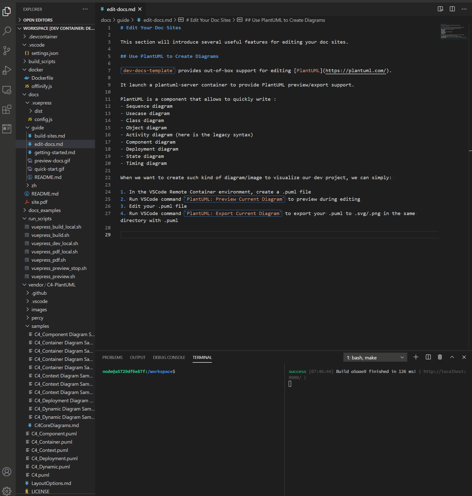
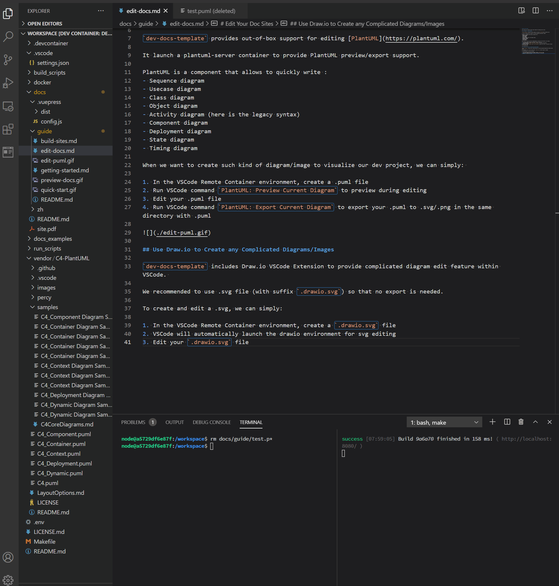

# Edit Your Doc Sites
This section will introduce several useful features for editing your doc sites.
# Use PlantUML to Create Diagrams
dev-docs-template provides out-of-box support for editing PlantUML (opens new window).
It launch a plantuml-server container to provide PlantUML preview/export support.
PlantUML is a component that allows to quickly write :
- Sequence diagram
- Usecase diagram
- Class diagram
- Object diagram
- Activity diagram (here is the legacy syntax)
- Component diagram
- Deployment diagram
- State diagram
- Timing diagram
When we want to create such kind of diagram/image to visualize our dev project, we can simply:
- In the VSCode Remote Container environment, create a .puml file
- Run VSCode command
PlantUML: Preview Current Diagramto preview during editing - Edit your .puml file
- Run VSCode command
PlantUML: Export Current Diagramto export your .puml to .svg/.png in the same directory with .puml

# Use Draw.io to Create any Complicated Diagrams/Images
dev-docs-template includes Draw.io VSCode Extension to provide complicated diagram edit feature within VSCode.
We recommended to use .svg file (with suffix .drawio.svg) so that no export is needed.
To create and edit a .svg, we can simply:
- In the VSCode Remote Container environment, create a
.drawio.svgfile - VSCode will automatically launch the drawio environment for svg editing
- Edit your
.drawio.svgfile

# Configurate Navbar/Sidebar
The default sites use VuePress default theme, which include the Navbar/Sidebar features.
Relative configuration file is in $DOCS_RELATIVE_PATH/.vuepress/config.js ($DOCS_RELATIVE_PATH defined in ./.env, default docs_src).
Please check these highlighted parts
themeConfig: {
sidebar: 'auto',
locales: {
'/': {
selectText: 'Languages',
label: 'English',
nav: [
{ text: 'Home', link: '/' },
{ text: 'Guide', link: '/guide/index.html' },
{ text: 'GitHub', link: 'https://github.com/lisy09/dev-docs-template' },
],
sidebar: {
'/guide/': [
{
title: 'Guide',
collapsable: true,
children: [
'',
'getting-started',
'edit-docs',
'build-sites'
]
}
],
}
},
2
3
4
5
6
7
8
9
10
11
12
13
14
15
16
17
18
19
20
21
22
23
24
25
26
For further information, please check VuePress official documents about Navbar (opens new window) and Sidebar (opens new window).